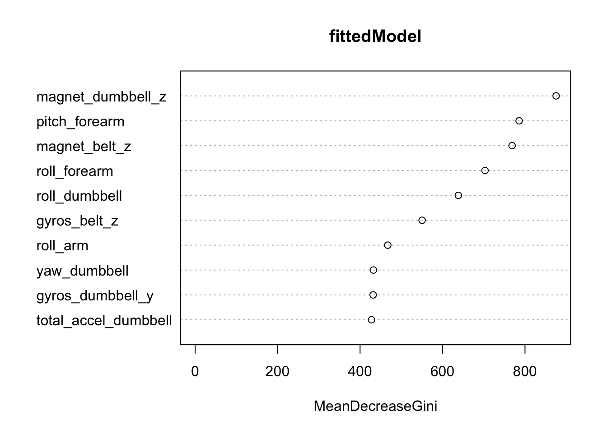
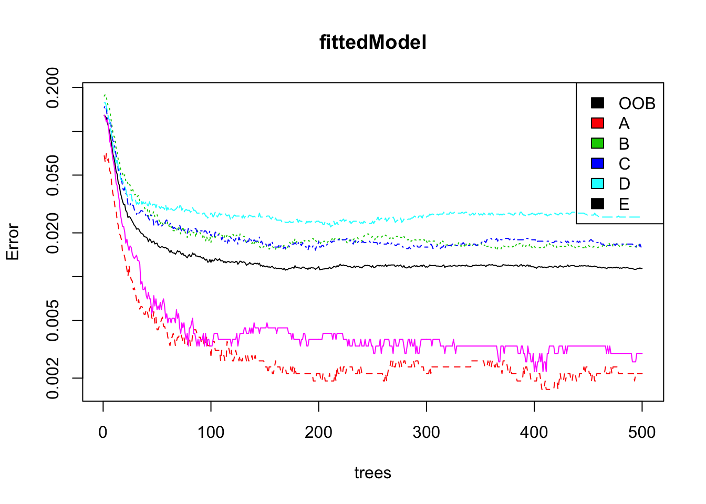
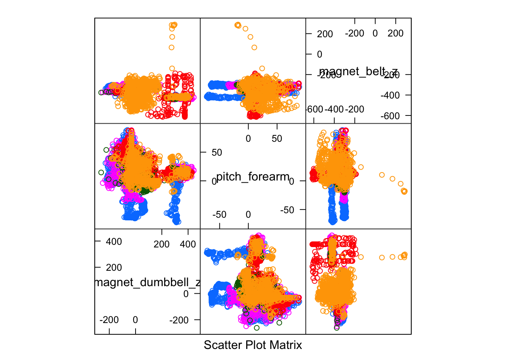

In this analysis we will try to predict 20 observations based on data from personal fitness devices.
The data for our analysis has been partitioned into training and test datasets already. Our first step will be to load the data, and then remove any of observations that are not complete. We’ll also remove the first five datapoints which are not device measurements.
training = read.csv("pml-training.csv", stringsAsFactors=F)
validation = read.csv("pml-testing.csv", stringsAsFactors=F)
completeCasesByVariables = complete.cases(t(training))
completeCasesByVariables[1:7] = F
training = training[,completeCasesByVariables]
validation = validation[,completeCasesByVariables]The training set now contains 19622 and variables 86 variables, but some of these contain no variation or are covarient with other variables, and thus should be removed. Note that we are also removing the variables from the validation set.
nzvVariables = nearZeroVar(training, uniqueCut=10)
training = training[,-nzvVariables]
validation = validation[,-nzvVariables]
M = abs(cor(training[,-dim(training)[2]]))
diag(M) = 0
corVariables = findCorrelation(M, .7)
training = training[,-corVariables]
validation = validation[,-corVariables]The processed training dataset now contains 19622 observations and variables 31 variables.
We’ll treat the provided test set as our validation dataset, and partition the provided training data into our own training and test datasets.
inTrain = createDataPartition(y=training$classe, p=.75, list=F)
trainingSet = training[inTrain,]
testingSet = training[-inTrain,]Next will train the model using all remaining variables using the randomForest algorithm with the default options, and build a prediction based on our testing dataset.
trainingSet$classe = as.factor(trainingSet$classe)
resultColumn = dim(testingSet)[2]
fittedModel = randomForest(classe ~ ., data = trainingSet)
predictResult = predict(fittedModel, testingSet[,-resultColumn])
modelAccuracy = confusionMatrix(testingSet[,resultColumn], predictResult)
modelAccuracy$overall## Accuracy Kappa AccuracyLower AccuracyUpper AccuracyNull
## 0.9871533 0.9837487 0.9835931 0.9901145 0.2846656
## AccuracyPValue McnemarPValue
## 0.0000000 NaNOur model provides a 0.9871533 accuracy, which is pleasently sufficient, and predicts most variables very well.
correctPredictions = testingSet$classe == predictResult
table(predictResult, testingSet$classe)##
## predictResult A B C D E
## A 1392 4 0 0 0
## B 2 938 14 0 0
## C 0 7 836 28 0
## D 0 0 5 774 0
## E 1 0 0 2 901Let’s have a look at our 5 most important predictors.
variableImportance = varImp(fittedModel)
rownames(variableImportance)[order(variableImportance, decreasing = T)][1:15]## [1] "magnet_dumbbell_z" "pitch_forearm" "magnet_belt_z"
## [4] "roll_forearm" "roll_dumbbell" "gyros_belt_z"
## [7] "roll_arm" "yaw_dumbbell" "gyros_dumbbell_y"
## [10] "total_accel_dumbbell" "accel_forearm_x" "magnet_forearm_z"
## [13] "magnet_arm_x" "accel_forearm_z" "pitch_dumbbell"Plot of must important predictors and their cross-validation importance.
varImpPlot(fittedModel, n.var = 10)
Plot the error rate over various outcomes and interations of the tree.
plot(fittedModel, log="y")
legend("topright", colnames(fittedModel$err.rate),col=1:5,fill=1:5)
Examine how our top three predictors relate to each other
variableImportance = varImp(fittedModel)
tenMostImportantVariables = rownames(variableImportance)[order(variableImportance, decreasing = T)][1:10]
testingSet$classe = as.factor(testingSet$classe)
featurePlot(x=testingSet[, tenMostImportantVariables[1:3]], y=testingSet$classe, plot="pairs")
General information about accuracy, confidence, and error.
modelAccuracy## Confusion Matrix and Statistics
##
## Reference
## Prediction A B C D E
## A 1392 2 0 0 1
## B 4 938 7 0 0
## C 0 14 836 5 0
## D 0 0 28 774 2
## E 0 0 0 0 901
##
## Overall Statistics
##
## Accuracy : 0.9872
## 95% CI : (0.9836, 0.9901)
## No Information Rate : 0.2847
## P-Value [Acc > NIR] : < 2.2e-16
##
## Kappa : 0.9837
## Mcnemar's Test P-Value : NA
##
## Statistics by Class:
##
## Class: A Class: B Class: C Class: D Class: E
## Sensitivity 0.9971 0.9832 0.9598 0.9936 0.9967
## Specificity 0.9991 0.9972 0.9953 0.9927 1.0000
## Pos Pred Value 0.9978 0.9884 0.9778 0.9627 1.0000
## Neg Pred Value 0.9989 0.9960 0.9914 0.9988 0.9993
## Prevalence 0.2847 0.1945 0.1776 0.1588 0.1843
## Detection Rate 0.2838 0.1913 0.1705 0.1578 0.1837
## Detection Prevalence 0.2845 0.1935 0.1743 0.1639 0.1837
## Balanced Accuracy 0.9981 0.9902 0.9776 0.9932 0.9983Dataset and citations: http://groupware.les.inf.puc-rio.br/har